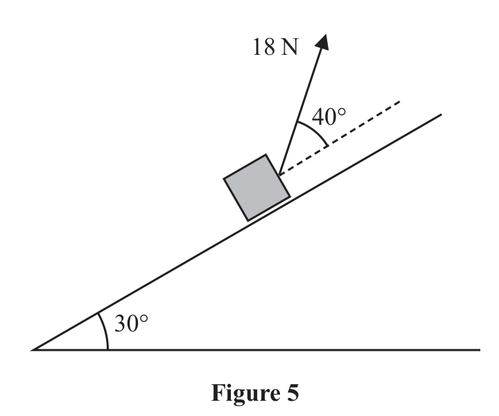
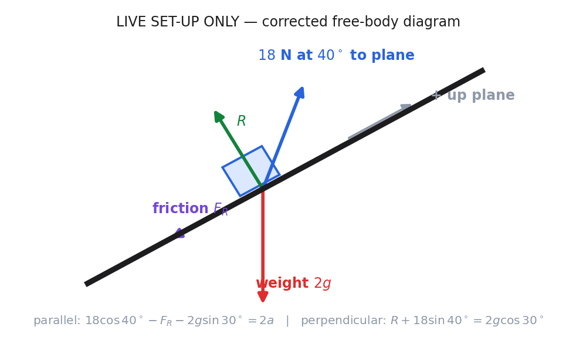

From the official paper. A parcel of mass \(2\,\mathrm{kg}\) is pulled up a rough inclined plane by the action of a constant force.
The force has magnitude \(18\,\mathrm N\) and acts at an angle of \(40^\circ\) to the plane.
The line of action of the force lies in a vertical plane containing a line of greatest slope of the inclined plane.
The plane is inclined at an angle of \(30^\circ\) to the horizontal, as shown in Figure 5.

The coefficient of friction between the plane and the parcel is \(0.3\)
The parcel is modelled as a particle P
(a) Find the acceleration of P (8)
The points A and B lie on a line of greatest slope of the plane, where \(AB=5\,\mathrm m\) and B is above A. Particle P passes through A with speed \(2\,\mathrm{m\,s^{-1}}\) in the direction AB.
(b) Find the speed of P as it passes through B. (3)
The force of \(18\,\mathrm N\) is removed at the instant P passes through B. As a result, P comes to rest at the point C.
(c) Determine whether P will remain at rest at C. You must show all stages of your working clearly. (4)
(Total for Question 8 is 15 marks)
Lesson status: LIVE SET-UP ONLY · Source class: official WME01/01 Jan 2023 (packet Q8)
Teaching visual — corrected live set-up.

Sense check, exam trigger and stopping point: verify every force direction against the impending-motion assumption; when you see limiting equilibrium on a rough plane, set $F=\mu R$ only after choosing the friction direction. The live work stopped at the authorised equations, so no further lesson-derived arithmetic is shown.
Live boundary and strategy. The lesson reached only the diagram and governing equations; it did not eliminate unknowns or evaluate the acceleration. Choose axes parallel and perpendicular to the \(30^\circ\) plane because this makes the reaction and friction single-axis forces. Weight \(2g\) resolves into \(2g\sin30^\circ\) down the plane and \(2g\cos30^\circ\) into it. The \(18\ \mathrm N\) pull resolves into \(18\cos40^\circ\) up the plane and \(18\sin40^\circ\) away from it.
Formula and force-direction logic. Newton’s second law is \(\sum F=ma\). Taking up the plane positive, the live parallel equation was \(18\cos40^\circ-F_R-2g\sin30^\circ=2a\): friction is drawn down the plane because it opposes the stated/impending up-plane motion, not automatically because the plane slopes. The friction relation reached live was \(F_R=\mu R=0.3R\), using limiting friction for the moving rough-contact model.
Corrected perpendicular equation. There is no acceleration normal to the plane, so forces balance perpendicular to it: \(R+18\sin40^\circ=2g\cos30^\circ\). The pull lifts away from the surface and therefore reduces \(R\). This corrected source-authorised form replaces the final board line \(R-2g\sin30^\circ+18\sin40^\circ=0\), which used the wrong weight component. The arithmetic stops here in the live layer.
The live layer ends after the corrected model. Choose axes parallel and perpendicular to the plane. Newton’s second law is \(\sum F=ma\); with up-plane positive, \(18\cos40^\circ-F_R-2g\sin30^\circ=2a\). Normal balance is \(R+18\sin40^\circ=2g\cos30^\circ\), because the pull lifts away from the surface, and friction while moving satisfies \(F_R=0.3R\) down the plane. The difficult correction is replacing ‘vertical balance’ by balance perpendicular to the plane and using the cosine weight component normally. Arithmetic beyond these equations is not attributed to the live lesson. Transfer cue: resolve weight as sine parallel and cosine normal before deciding friction direction.
Check-back and transfer trigger. Every term in the parallel equation is a force and the right side is \(2a\), since mass is \(2\ \mathrm{kg}\). In the perpendicular equation, “away” terms oppose “into” terms; a pull away from a plane must not increase reaction. For any oblique-force incline, trigger: draw arrow directions, resolve weight using sine parallel/cosine normal, decide friction from opposed motion, write the zero-normal equation first, and only then write the accelerating-axis equation.
Each live equation can be checked dimensionally and geometrically without solving it. The normal pull component must reduce reaction; moving it to the right gives \(R=2g\cos30^\circ-18\sin40^\circ\). Every term in the parallel equation is a force, and the right side is mass two times acceleration. Friction opposes the stated upward motion, not the slope itself. The evidence-grounded diagnostic is the recorded confusion between vertical and perpendicular axes; the tutor’s broader claim that friction exists only because of the pull is not taught as a general law. The authorised live endpoint is this corrected three-equation system, with reaction and friction in newtons and acceleration still unknown; no numerical completion is attributed to the lesson. On a new rough-plane problem, draw the actual motion arrow, derive reaction from the current force set, then form \(\mu R\) and the parallel resultant.
Status and strategy. This numerical completion was not reached live; it is OFFICIAL MS REFERENCE ONLY. Start from the corrected normal equation because friction depends on reaction, then substitute into the parallel equation. Formula order matters: \(R+18\sin40^\circ=2g\cos30^\circ\), \(F_R=\mu R\), and \(18\cos40^\circ-F_R-2g\sin30^\circ=2a\). Use \(g=9.8\ \mathrm{m\,s^{-2}}\) and retain calculator precision.
Normal reaction. Rearrangement gives \(R=2g\cos30^\circ-18\sin40^\circ\). Substituting produces \(R=19.6(0.866025\ldots)-18(0.642788\ldots)=5.4039\ldots\ \mathrm N\). The minus sign has physical meaning: the pull’s away-from-plane component unloads the contact. A positive reaction confirms that contact is maintained under the model.
Friction and parallel resultant. The official route uses \(F_R=0.3R=1.6212\ldots\ \mathrm N\). Hence \(2a=18\cos40^\circ-1.6212\ldots-2(9.8)\sin30^\circ\). Numerically, \(2a=13.7888\ldots-1.6212\ldots-9.8=2.3676\ldots\ \mathrm N\), so \(a=1.1838\ldots\ \mathrm{m\,s^{-2}}\).
Direction transition. Because the signed result for \(a\) is positive under the chosen up-plane convention, acceleration is up the slope. That conclusion follows from all three parallel contributions, not from the rejected general claim about friction. Had the result been negative, the acceleration would be down the plane and the assumed direction would need interpretation; the algebraic sign, not a verbal guess, decides.
The official-reference arithmetic starts from the live corrected equations. First \(R=2g\cos30^\circ-18\sin40^\circ=5.4039\ldots\ \mathrm N\). Then \(F_R=0.3R=1.6212\ldots\ \mathrm N\). Finally, \(2a=18\cos40^\circ-1.6212\ldots-2g\sin30^\circ=2.3676\ldots\), so \(a=1.1838\ldots\ \mathrm{m\,s^{-2}}\) up the plane. This order is compulsory because friction depends on reaction. Positive R confirms contact and positive a matches the chosen axis. Transfer recognition: an oblique pull on a rough plane requires reaction first, friction second and parallel acceleration last because each quantity feeds the next. The calculation is official-MS-reference-only, not a retrospective claim of live completion.
Official answer only. The January 2023 scheme accepts \(a=1.18\) or \(1.2\ \mathrm{m\,s^{-2}}\). The retained value \(1.1838\ldots\) is a carry-in for part (b), while the displayed rounded value answers part (a).
Check-back. Substitute \(R\) into the normal equation: reaction plus the pull’s normal component recovers \(2g\cos30^\circ\). Substitute \(a\) into \(2a\): it recovers the net up-plane force. Units move correctly from newtons to acceleration only after division by \(2\ \mathrm{kg}\).
The strategy is to report the requested part-(a) answer as \(a=1.18\ \mathrm{m\,s^{-2}}\) to three significant figures while retaining the unrounded value only because part (b) depends on it. Check the normal equation by adding reaction and the away-from-plane pull component; the result returns \(2g\cos30^\circ\). Check the parallel equation by multiplying acceleration by mass two; it returns the signed net force. Using \(2g\sin30^\circ\) in the normal balance reproduces the known board defect and would corrupt every later number. Transfer cue: preserve calculator precision through dependent parts and round only the displayed endpoint requested by the current command.
Status, strategy and formula. Part (b) was not attempted in the lesson, so every calculation here is OFFICIAL MS REFERENCE ONLY. The motion from the stated starting point to B has known initial speed \(u=2\ \mathrm{m\,s^{-1}}\), displacement \(s=5\ \mathrm m\), and the constant acceleration carried from part (a). Time is absent, so select \(v^2=u^2+2as\); this is the SUVAT relation that eliminates time.
Sign and carry-in logic. Keep up the plane positive. The parcel moves to B up the plane, so \(s=+5\ \mathrm m\); official-reference acceleration is also positive, \(a=+1.1838\ldots\ \mathrm{m\,s^{-2}}\). Preserve that unrounded carry-in rather than substituting the displayed \(1.18\), because part (b) depends on part (a). A consistent axis makes the product \(2as\) positive, predicting a greater speed at B.
Complete authorised working. Substitute into the formula: \(v^2=2^2+2(1.1838\ldots)(5)=15.838\ldots\). Since the question asks for speed, take the non-negative square root: \(v=\sqrt{15.838\ldots}=3.9797\ldots\ \mathrm{m\,s^{-1}}\). The negative algebraic root would represent a velocity in the opposite direction, but is not the requested speed and does not match this phase of motion.
For A to B, use the governing constant-acceleration relation \(v^2=u^2+2as\) because time is absent. Take up-plane positive: \(u=2\ \mathrm{m\,s^{-1}}\), \(s=5\ \mathrm m\), and carry the unrounded \(a=1.18381185\ldots\ \mathrm{m\,s^{-2}}\). Then \(v^2=4+2(1.18381185\ldots)(5)=15.838\ldots\), so speed \(v=3.9797\ldots\ \mathrm{m\,s^{-1}}\). The positive square root is required because speed is non-negative and the parcel is still travelling toward B. Transfer recognition: known displacement and acceleration with no time signal squared-speed SUVAT, followed by a root choice justified from the motion direction. This part was not attempted live and remains official-reference only.
Official answer and boundary. The January 2023 mark scheme accepts \(v=3.98\ \mathrm{m\,s^{-1}}\) or \(4.0\ \mathrm{m\,s^{-1}}\). This result comes from the official completion, not from live lesson arithmetic.
Check-back. Squaring the rounded answer gives approximately \(15.84\ \mathrm{m^2\,s^{-2}}\), matching \(u^2+2as\). The speed exceeds \(2\ \mathrm{m\,s^{-1}}\), consistent with positive acceleration and displacement in the same direction. Units also match after taking the square root.
The official answer is \(3.98\ \mathrm{m\,s^{-1}}\). Squaring it approximately recovers \(15.84\ \mathrm{m^2\,s^{-2}}\), and it exceeds the initial speed because acceleration and displacement are both positive in the chosen direction. A negative root would describe an opposite signed velocity, not the requested speed in this phase. Using \(v=u+at\) would invent an unavailable time; changing only the sign of displacement would mix conventions. Transfer cue: when displacement and constant acceleration are known but time is not, select the squared-speed formula and carry full precision from the prior part.
Status, definition and strategy. Part (c) was not attempted live; this is OFFICIAL MS REFERENCE ONLY. Once the \(18\ \mathrm N\) force is removed and P is instantaneously at rest, friction is not automatically \(\mu R\). Static friction adjusts up to the limiting value: \(0\le F\le\mu R\). First calculate the friction required for equilibrium, then compare it with the maximum available value.
New force diagram and authorised working. Removing the oblique pull changes the normal reaction, so the earlier \(R=5.4039\ldots\ \mathrm N\) cannot be carried forward. Perpendicular balance now gives \(R=2g\cos30^\circ=16.974\ldots\ \mathrm N\). The greatest possible static friction is \(\mu R=0.3(16.974\ldots)=5.092\ldots\ \mathrm N\). To remain at rest, friction would need to act up the plane and balance \(2g\sin30^\circ=9.8\ \mathrm N\) down the plane.
Hard inequality and direction logic. The required \(9.8\ \mathrm N\) exceeds the available \(5.092\ldots\ \mathrm N\). Therefore no admissible static-friction value can make the resultant zero. The unbalanced tendency is down the slope, so P does not remain at rest. This is a capacity comparison, not an assumption that friction always equals its limiting value.
After the 18-newton force is removed, construct a new force model. Static friction is adjustable, \(0\leq F\leq\mu R\), so compare required friction with capacity. New normal balance gives \(R=2g\cos30^\circ=16.974\ldots\ \mathrm N\), hence maximum friction \(0.3R=5.092\ldots\ \mathrm N\). To remain at rest, P would need \(2g\sin30^\circ=9.8\ \mathrm N\) up the plane. Since \(9.8>5.092\ldots\), equilibrium is impossible and the parcel moves down the plane. Check by applying the maximum available friction: a positive down-plane resultant \(9.8-5.092\ldots\) still remains. The difficult step is recomputing R after the force set changes rather than reusing part (a). Transfer recognition: removal of an oblique force always requires a fresh reaction before static-friction capacity is tested.
Check-back and transfer trigger. Even at maximum friction, the down-plane resultant is \(9.8-5.092\ldots>0\), confirming motion down the plane. Both compared quantities are forces in newtons and use the reaction for the post-removal situation. On any “does it remain at rest?” question, trigger a fresh diagram after the force change, compute required friction, compute \(\mu R\), and decide by inequality before assigning a motion direction.
The final official-reference endpoint is that P does not remain at rest at C. Even maximum friction leaves a down-plane resultant \(9.8-5.092\ldots>0\), which checks the direction. Writing \(F=\mu R\) immediately would mistake a maximum for every static-friction value; comparing with full weight would compare the wrong direction. Both quantities in the decisive inequality are parallel forces measured in newtons and use the post-removal reaction. Transfer cue: for ‘will it remain at rest?’, draw a fresh diagram, calculate the friction required for equilibrium, calculate the available maximum, compare by inequality, and only then state subsequent motion.